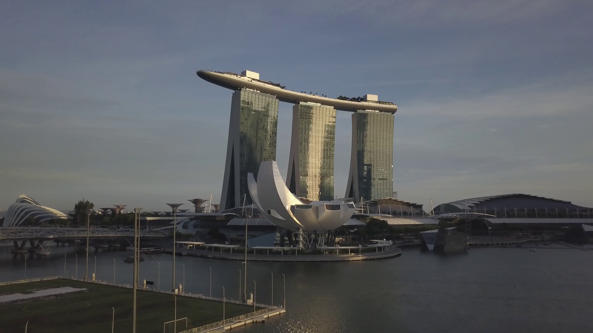

El Museo de Arte y Ciencia de Bilbao es uno de los más prestigiosos no solo a nivel nacional sino también a nivel europeo no solo por la integración de instalaciones modernas o extensión territorial del propio museo sino también por la variedad de exposiciones que ofrecemos, la calidad de nuestras colecciones y la profesionalidad de nuestros empleados.
Debido a la densidad de público que recibimos, no solo del territorio español sino también de todo el mundo, el museo abre sus instalaciones prácticamente los 365 días del año. Esta característica permite al público la versatilidad de decidir el momento adecuado para aprender.
El Museo de Arte y Ciencia de Bilbao es un centro de ciencia y museo de 95.000 m², situado a escasos minutos a pie del centro histórico de Bilbao. Desde su inauguración, en 2005, es el museo más visitado de Europa.
Más de 15 millones de personas conocen ya sus instalaciones, una cifra que lo ha consolidado como centro de referencia internacional de la divulgación científica en el sur de Europa. Está abierto todo el año, de lunes a domingos y festivos, y ofrece actividades y exposiciones para todos los públicos.
Debido no solo a nuestra localización sino también a nuestra calidad y una filosofía basada en que el saber no ocupa lugar a día de hoy podemos estar orgullosos por nuestra labor.
El Museo de Arte y Ciencia de Bilbao está gestionado por un Consorcio Público formado por las Consejerías de Educación; Medio Ambiente y Ordenación del Territorio; Conocimiento, Investigación y Universidad. Ayuntamiento de Bilbao; Instituto Bilbaíno de Prevención de Riesgos Laborales; Consejo Superior de Investigaciones Científicas; Diputación Provincial de Bilbao; Universidad de Bilbao;
Numerosos talleres y actividades recreativas para jóvenes y mayores.
Con uno de los mayores planetarios a nivel europeo y usando la tecnología más puntera.
Más de 70.000 m² destinados a nuestras exposiciones no solo temporales.
Ciertas exposiciones con colecciones de valor único a nivel mundial.
Debido a la cantidad de visitantes que deciden disfrutar con nosotros del arte y la ciencia el museo abre los 365 días del año. El horario es muy sencillo, de lunes a viernes de 8:00 de la mañana a 23:00 de la noche y los fines de semana y festivos de 9:00 a 21:00. Todas las actividades no solo de las diferentes exposiciones sino las sesiones del planetario se realizan cada hora.
Contamos con tours por las zonas más importantes del museo y actividades en grupo que son exclusivas para las numerosas escuelas que vienen a visitarnos. Toda la información que desee puede disponer de ella en nuestra recepción o si lo desea puede →contactar con nosotros.←
En cuanto al exterior del edificio cabe destacar que el museo está rodeado de atractivos paseos y esculturas que homenajean a personajes ilustres famosos.El exterior del museo, cuyo perímetro puede recorrerse íntegramente, además es el terreno en el que se realizan algunas exhibiciones.
Una vez cruzada la puerta principalel visitante accede al Atrio, auténtico corazón del Museo y uno de los rasgos distintivos del diseño arquitectónico de Frank Gehry. Se trata de un gran espacio diáfano de volúmenes curvos que conectan el interior y el exterior del edificio mediante grandes muros cortina de vidrio y un gran lucernario cenital. Los niveles del Museo se organizan en torno a este Atrio central y se conectan mediante pasarelas, ascensores de titanio y cristal, y torres de escaleras. El Atrio, que también funciona como espacio expositivo.